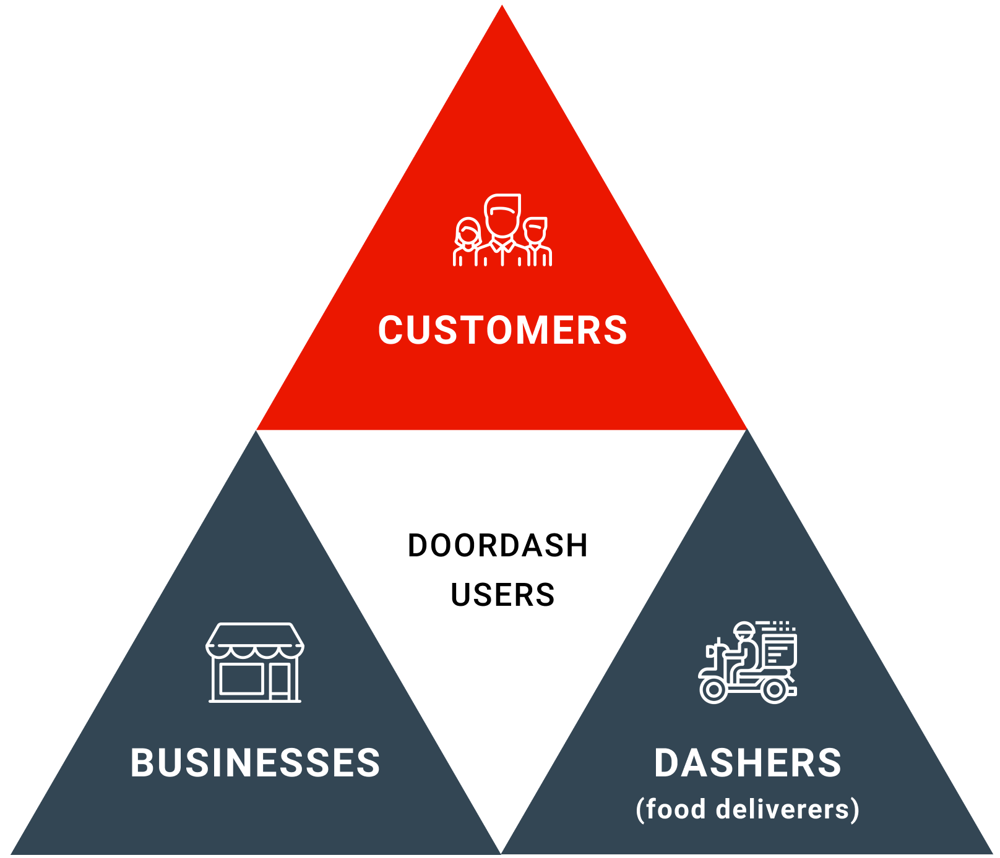

DoorDash Redesign Challenge
I redesigned a feature of DoorDash for the Kleiner Perkins Fellowship design challenge. The challenge was to "redesign a feature of a Kleiner Perkins company's product".
Outcome
I passed this step of the application process and am a finalist for the Kleiner Perkins design fellowship.
My Approach
I kicked off the project researching DoorDash's business model, finding that the main user groups are customers, businesses, and Dashers (food deliverers). For this project, I decided to narrow the scope to customers as I could easily reach out to this user group.

DoorDash's user base is largely made up of working professionals and young families, and coming onto the platform, they tend to be time-sensitive and goal oriented. Thus, I targeted the experience of exploring eateries to help users be more efficient when performing this initial step of making an order.

Usability Testing
I also downloaded the DoorDash app to map out user flows for initial usability testing. I approached usability testing by performing tasks based on specific intentions and end goals. Some use cases include:
Prompt
Needing a quick, inexpensive, yet quality meal ASAP
Ordering a dish that’s already in mind
Exploring the neighborhood and finding the best burger in town
Task
Sort businesses by highest ratings, fastest delivery time, and low to high price range
Go about ordering a specifc dish from a specific business
Filter by cuisine type, distance away, and other preferences

Example task flow for a particular use case
Problems
My takeaway from usability testing boiled down to these four main problems:
Problem 1: Sorting and filtering leads to decision fatigue
Users can swipe horizontally to filter by specific cuisines and sort by ratings, delivery time, etc.
The subcategory for cuisines alone has 19 items with 4 displayed at once. That's 19 items too many when users are in a hurry, and certain features may go unnoticed from the endless scrolling.

Problem 2: Search function easily overlooked
People view screens in F-patterns, and that could be the reason why the search function escaped my attention for the longest time, especially with such bright visuals on the page drawing my attention away from it. Thus, the placement of the search function was another area I chose to evaluate.

Problem 3: No ability to save businesses
I constantly found myself wanting to "save" businesses throughout my journey of deciding on one.
Instead, I had to keep businesses in my mental back-burner as I went along with exploring alternative options. This was time consuming as I had to spend time recovering prior searches, and it was difficult to compare options against each other.

Problem 4: Visual inconsistencies
The business browsing experience is visually reliant on individual cards displaying images of menu items. However, some cards have a white background while others have a solid background. This lack of visual cohesion may falsely convey sectional differences in areas where images belong to one category.
Additionally, in rows of images with white backgrounds, there lacks a visual indication that users can swipe to see more images.

Competitive Analysis
As a final step before jumping into ideation, I wanted to see if competitors had the same usability issues that I encountered during usability testing with DoorDash, and if not, how they were able to work around them.

Postmates, Grubhub, and Uber Eats were a few products that helped further my understanding of the problem space. In all products, imagery/media was heavily emphasized. However, layouts of businesses, user flows for setting filters, and interaction patterns were areas where products differed.
Another interesting thing to note is how DoorDash brands itself differently from competitors; the business felt very friendly and approachable with its iconic bright red branding colors and cartoony icons.

I found the graphics used for cuisine icons very telling of DoorDash's brand image. Cartoony illustrations with rough outlines and imperfect shapes make the platform feel friendly and informal.
Proposed Solutions
Problem 1: Sorting and filtering leads to decision fatigue
Solution: Currently there are two rows of items users horizontally swipe on to choose filters, the top with 15+ items, and the bottom with 7. I decided to unify them to a single dropdown menu where users can view all items at once and quickly and efficiently set multiple filters.
I made sure to retain DoorDash's cuisine icons to maintain the friendly, casual sentiment that the current design evokes.
Click here to view the Figma prototype for expanding and setting filters

Problem 2: Search function easily overlooked
Solution: Place the search bar at the top of the screen. In line with the prior mentioned rule of F-patterns, this brings greater visibility and thus higher usage to the search function.

Problem 3: No ability to save businesses
Solution: Introduce a "favorites" page so users can save businesses to view at any time. Users then have the ability to add businesses to their favorited list by activating an icon to do so on the upper right corner of business images.

Problem 4: Visual inconsistencies
Solution: Introduce a border around each image to make the UI more visually cohesive. In a previous iteration, I put a solid background behind each image but reconsidered that as it may take additional engineering effort to accomplish, and that would cause a high loading time.
Additionally, with a border around every image, there will always be a hint of content peeking out on the rightmost side of the screen, serving as a visual indicator that a set of content is horizontally scrollable.

Metrics
For the next steps of this project, I would want to measure my designs against the following key performance indicators to determine whether or not my design was successful or not.
Solution
Ability to sort and filter businesses easily
Ability to search for businesses
Ability to save businesses by adding them to Favorites
Maintain visual consistency
Possible KPI's
# of results clicked upon setting filters
# of queries inputted and results clicked
# of business saved
Talk to users about their experience navigating the UI
Reflection
This design challenge was a fun opportunity to learn more about the state of the food delivery service industry and to analyze how major players are framing their products to create a gratifying experience for their users.
Here are some key learnings I took away from this project:
1. Narrowing down the scope of my project as well as walking myself through task flows with specific users in mind served to be a valuable practice. Doing so helped me focus in on specific problems rather than become buried with reinventing too many aspects of the product.
2. Taking note of the smaller details helped me create interactive prototypes that follow DoorDash's look and feel. This allowed me to create solutions that are more shippable extensions rather than total upheavals of the current experience.